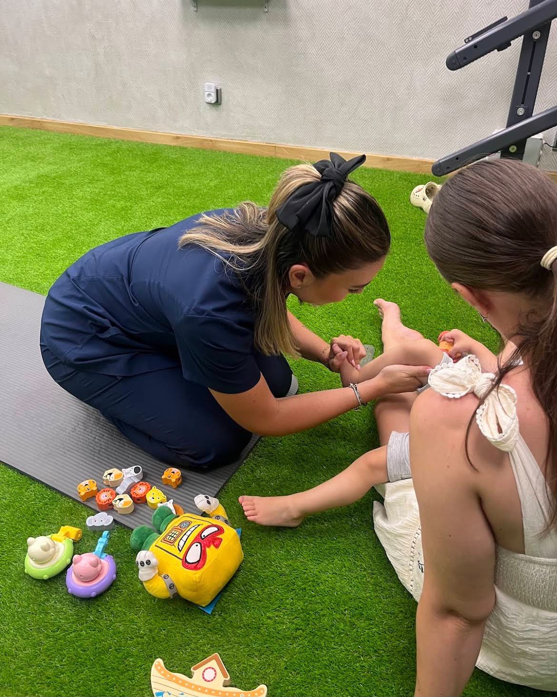
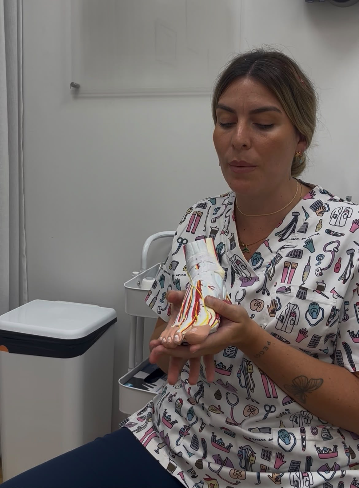
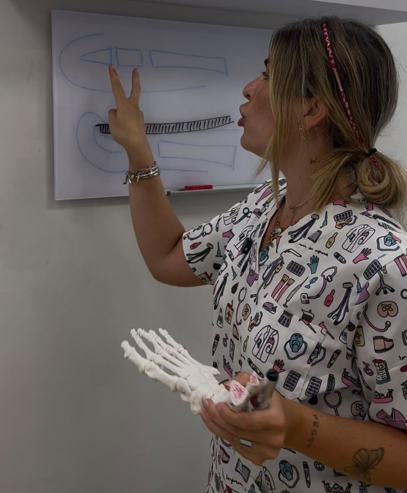

Sin gastar tiempo, dinero de más ni sentir la culpa de no saber si eliges bien.
Antes de comprarle otro zapato, descubre qué necesita su pie ahora mismo — según la etapa exacta de su desarrollo, no según su edad en años.
PDF gratuito · Sin registro · Descarga inmediata
El calzado adecuado no es una recomendación puntual ni un accesorio que "corrige" solo. Es un criterio que tienes que aprender a aplicar tú, cada vez que compras un par nuevo.
2 sesiones conmigo y un informe personalizado, para que sepas elegir — para siempre — el calzado que le viene bien a cada miembro de tu familia. Para tus hijos, para ti, o para todos juntos.
En la primera sesión analizamos cómo pisa, cómo se mueve, qué ha heredado, cuál es su perfil sensorial y sus necesidades reales — y también qué es lo que te preocupa a la hora de elegir calzado.
Aprendes a elegir cualquier calzado con lógica clínica: un criterio que te sirve para siempre, no una recomendación puntual.
Del calzado convencional a uno que libere los pies, con opciones en todos los rangos de precio, sin alterar vuestra rutina familiar.
Al terminar la primera sesión, recibes las marcas y modelos concretos que os vienen bien, listos para elegir y comprar sin dar más vueltas.
En la segunda sesión, ya con el proceso de compra hecho, revisamos juntos cómo se ha adaptado y resolvemos cualquier duda que haya quedado.
Entre sesiones tienes un acompañamiento real y personalizado — ejercicios, fotos o vídeos según lo que necesite tu caso — y un sitio donde preguntarme en cuanto te asalte una duda.
Soy paciente de Laura desde hace más de un año y estoy encantada. Su consulta se ha convertido en algo esencial para el cuidado de mis pies. Es una podóloga muy actualizada y se implica en el caso de cada paciente. Sin duda la recomiendo.
Nuestra experiencia con Laura maravillosa! Tengo una niña de 9 años, la cual lleva años sufriendo dolores de rodilla, espalda, todo el día muy cansada, tanto que la limitaba realizar cualquier actividad física porque siempre terminaba con dolor sobre todo de rodillas y tomando antiinflamatorio prácticamente casi a diario. Después de llevarla a diferentes médicos, siempre me decían lo mismo, tiene dolores de crecimiento, que estaba todo bien. Desesperada me puse a buscar un podólogo pediatra, porque yo la veía andando raro y de casualidad encontré a Laura por Instagram, y no puedo estar más agradecida. Como explica de bien todo, el cariño que le pone y el buen trabajo que hace. Le hizo un estudio de la pisada y le puso un tratamiento personalizado y hemos vuelto a consulta después de 1 mes. Mi niña es completamente otra tan solo con un mes que lleva siguiendo las recomendaciones que nos dio. Está más activa, realiza su deporte con normalidad y lo mejor que no se queja de dolor. Espero que nuestra experiencia le sirva a alguna persona que pase por lo mismo, y sobre todo que no dejen pasar tanto tiempo como nos sucedió a nosotros. Muchas gracias Laura!
Fuimos a Laura para una segunda opinión y solo puedo estar agradecida con ella, su trato, sus explicaciones nos dejaron muy tranquilos para nuestro peque, nos ha dado tratamiento y además ayuda en todo momento transmitiéndonos ternura además de conocimientos. Solo puedo darle las gracias.
Gracias a Laura Marín, podóloga de la clínica, por su simpatía, calidad humana y profesionalidad. Hemos pasado por allí varios miembros de la familia y no podemos estar más contentos. Lo recomendaría una y otra vez.
Contraté el servicio online de Laura de asesoramiento de calzado para viajar a Japón. Venía de un viaje de 5 días a Nueva York en el que sufrí fascitis plantar y tenía un miedo horrible a que me volviera a ocurrir en los 15 días en Japón. Laura me preparó una guía y me asesoró en el calzado que debería llevar. De no ser por ella... hubiese estado jodido. Me compré unas zapatillas perfectas, me mandó una guía de cómo cuidar mis pies y qué ejercicios hacer si sentía dolor. Impresionante. Gracias Laura!



2 sesiones + informe personalizado + acompañamiento entre sesiones
No es una guía genérica de internet con "aquí tienes una lista y suerte". Es un plan hecho para vuestro pie concreto, con seguimiento real de que la elección fue la correcta.
Precio de lanzamiento por tiempo limitado: el programa tiene un valor real de 350€. Por ser de las primeras familias en confiar en él, entráis a 200€ — un precio que no se va a repetir. Plazas limitadas por tanda, además: el acompañamiento cercano no es compatible con atender a veinte familias a la vez.
Lo que os ahorráis: plantillas que se repiten cada año, calzado mal comprado una y otra vez "a ciegas", posibles sesiones de fisioterapia el día de mañana por dolores que se pudieron evitar a tiempo. 200€ frente a eso es una cifra pequeña.
Si completas las 2 sesiones y las tareas entre medias, y no encontramos juntos un calzado adecuado para tu familia, te devuelvo el dinero.
Sí. El programa funciona igual si vienes tú solo, si venís tú y tus hijos, o toda la familia junta.
No. Todos los que participéis vais en la misma reunión, no se reparten citas por días distintos.
Buscamos el calzado adaptado a la patología o tratamiento actual, según la edad y la historia clínica. No sustituyo a tu podólogo si hay tratamiento en curso, trabajo en la misma dirección.
Sí, todo el programa es online por videollamada.
A través de tres cosas: la historia del pie (cómo pisa, qué ha heredado, qué te preocupa a ti), fotos y vídeos que me mandáis siguiendo mis indicaciones — de pie, en apoyo, caminando — y la conversación en la sesión, donde te voy preguntando y observando en directo por videollamada. No es lo mismo que tenerlo delante en consulta, y te lo digo con honestidad: si en algún momento detecto algo que necesita exploración física o una prueba que no puedo hacer a distancia, te lo diré y te derivaré a valoración presencial. Pero para lo que trabajamos aquí — criterio de elección de calzado, patrón de pisada, desarrollo del pie — la evaluación visual guiada es suficiente, y es el mismo método que ya uso con familias de fuera de España.
En la segunda sesión te pido que me mandes o me enseñes en directo un vídeo de tu hijo caminando con el calzado puesto — así veo si el pie se mueve con libertad dentro del zapato o si hay algo que lo está frenando. Durante el programa te doy las herramientas para que sepas medir tú misma el largo y el ancho del pie de tu hijo, de forma que no dudes a la hora de elegir el número: por delante debe sobrar entre 0,8 y 1 cm, y el ancho tiene que dejar que los dedos se muevan sin que el pie se deslice hacia la puntera al caminar. Son comprobaciones que aprendes a hacer tú, para repetirlas cada vez que le compres calzado sin necesidad de mí. Si algo no encaja — le queda grande, pequeño, o el modelo no es el que su pie necesita — lo detectamos ahí y buscamos juntos la alternativa correcta. Y si al final del proceso no damos con el calzado adecuado, entra la garantía: te devuelvo el dinero.
Reserva tu plaza y en la primera sesión ya tendrás tu guía personalizada.
RESERVA PLAZA